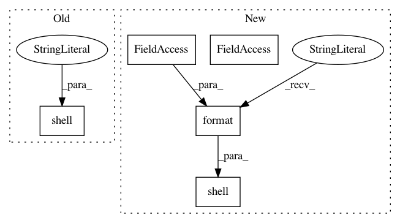

c9469fe6f125a2178ccafa904b8afe7ed64a0008,qanta/pipeline/preprocess.py,WikifierOutput,run,#WikifierOutput#,91
Before Change
def run(self):
shell("rm -rf data/external/wikifier/output")
shell("mkdir -p data/external/wikifier/output")
shell("(cd data/external/Wikifier2013 && java -Xmx10G -jar dist/wikifier-3.0-jar-with-dependencies.jar -annotateData ../wikifier/input ../wikifier/output false configs/STAND_ALONE_NO_INFERENCE.xml)")
shell("touch data/external/wikifier/output/_SUCCESS")
def output(self):
return LocalTarget("data/external/wikifier/output/_SUCCESS")
After Change
yield WikifierInput()
def run(self):
shell("rm -rf {}".format(c.WIKIFIER_OUTPUT_TARGET))
shell("mkdir -p {}".format(c.WIKIFIER_OUTPUT_TARGET))
command = (
"(cd data/external/Wikifier2013 "
"&& java -Xmx10G -jar dist/wikifier-3.0-jar-with-dependencies.jar "
In pattern: SUPERPATTERN
Frequency: 3
Non-data size: 5
Instances
Project Name: Pinafore/qb
Commit Name: c9469fe6f125a2178ccafa904b8afe7ed64a0008
Time: 2016-08-24
Author: ski.rodriguez@gmail.com
File Name: qanta/pipeline/preprocess.py
Class Name: WikifierOutput
Method Name: run
Project Name: Pinafore/qb
Commit Name: c9469fe6f125a2178ccafa904b8afe7ed64a0008
Time: 2016-08-24
Author: ski.rodriguez@gmail.com
File Name: qanta/pipeline/preprocess.py
Class Name: KenLM
Method Name: run
Project Name: Pinafore/qb
Commit Name: c9469fe6f125a2178ccafa904b8afe7ed64a0008
Time: 2016-08-24
Author: ski.rodriguez@gmail.com
File Name: qanta/pipeline/preprocess.py
Class Name: WikifierInput
Method Name: run